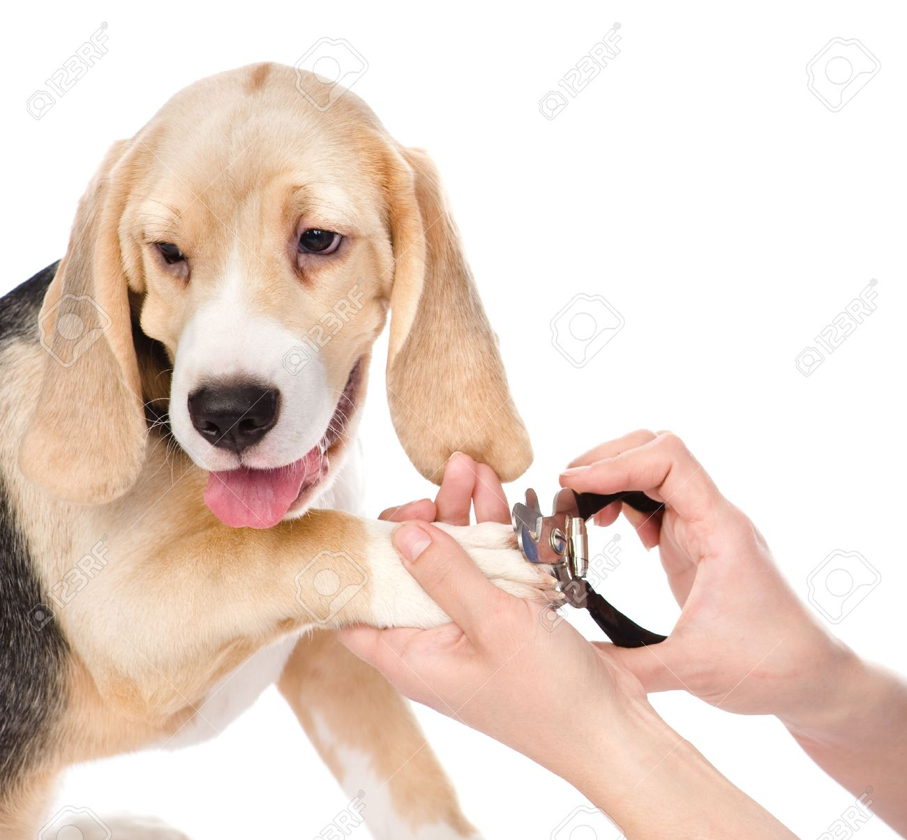
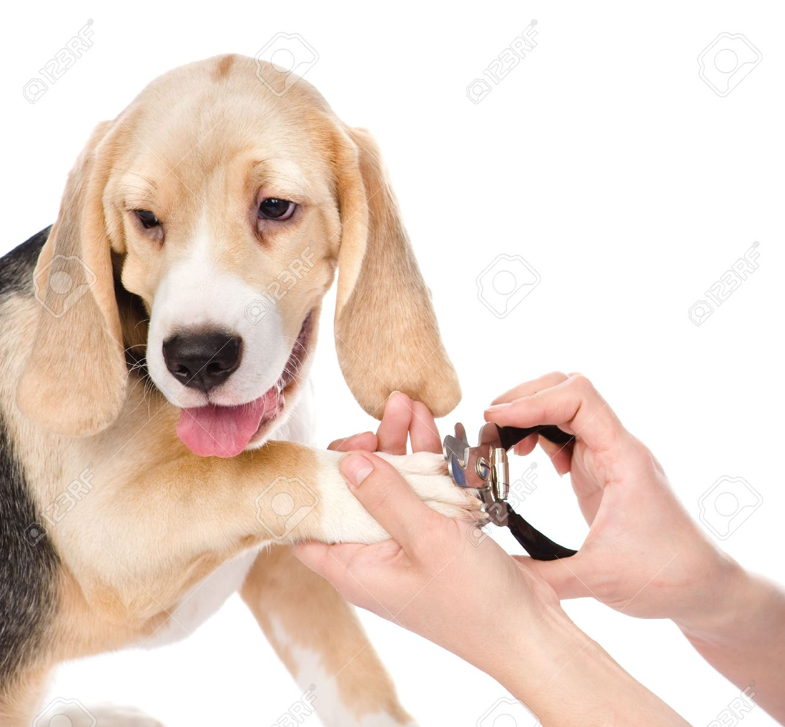

|  |  |
 |
 |
El pelo rizo de los perros es muy bonito, pero muy difícil de cuidar: hay que bañarlos con champús humectantes para garantizar la hidratación del rizo, no se deben utilizar acondicionadores para no aportar más volumen y su corte requiere de técnicas específicas. Se recomienda lavar a estos perros cada veinte días y cepillarlos a diario. Algunos perros con este tipo de pelaje son los caniches, los perros de agua españoles o los kerry blue terrier.
EL COSTO VARIA DEPENDE AL ESTADO DEL PELO DEL PERRO PERO EL PRESUPUESTO ES ENTRE 60Bs a 120Bs
|  | |
|
|